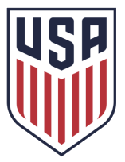
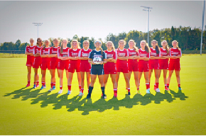

I have gone to Portland, Oregon and Carson, California for Women's National SoccerCamp. It was so much fun and I spent a week out of school for both trips. I have also been to Phoenix, Arizona; New Jersey; Charlotte, North Carolina; and Portland, Oregon for id2 National Camp. The id2 camps are normally 4 to 5 days long but the 5th day is for traveling.
These camps are a big deal in soccer. It is the top of the top competition and is very hard to compete in. You have to be very fit and highly intelligent in the game to make it at this level. I always have a good time going to these camps because I meet so many new people from all over the US. When I get home from these camps I normally sleep for the next 24 hours because the camps are so intense but I enjoy every minute of it.
I have basically grown up playing at CESA for club soccer. When I was around 4 my best friend made me play with her on her dad’s team and our team was called the cheetahs. We played rec soccer until we were 9 and then we both tried out for academy. Then we played in a league in the state trying to win state cup. When I was in 7th grade I started playing in a league called ECNL and it is the highest level of competition for club soccer.
ECNL is a league across the nation. You travel throughout your region for regular league games. But then there are showcases where college coaches come and watch you play and those range across the US. We normally end up going to one in Phoenix, Arizona; Sanford, Florida; and New Jersey. Then if we do well during the season and make it to nationals we will be going to Chicago this year.
Caroline Conti